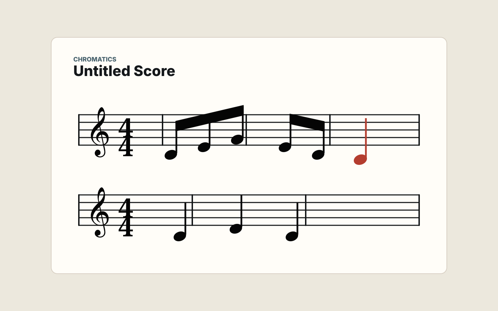

빠른 음표 입력
숫자 음가, A-G 입력, 쉼표, 타이, 셋잇단음표, range 편집을 키보드 중심으로 다룹니다.
데스크톱 사보 앱
총보와 파트보를 만들고 연주를 미리 듣는 데스크톱 사보 앱입니다. 악보를 프로젝트로 저장하고, MusicXML·PDF·MIDI·PNG 사본을 필요한 곳에 공유할 수 있습니다.

기능
숫자 음가, A-G 입력, 쉼표, 타이, 셋잇단음표, range 편집을 키보드 중심으로 다룹니다.
피아노 grand staff와 2-4 part ensemble을 만들고, 선택한 part view를 PDF 출력 대상으로 사용할 수 있습니다.
편집 상태는 Studio 프로젝트로 저장합니다. MusicXML로 악보를 교환하고 PDF·MIDI·PNG로 내보낼 수 있습니다.
셈여림, 가사, 코드 심벌, slur, hairpin, rehearsal mark, 페이지 설정을 사용해 악보를 다듬을 수 있습니다.
tempo map, repeat, tie/tuplet timing, part별 mute/solo/volume을 확인하며 악보를 점검할 수 있습니다.
선택한 음표는 위·아래 방향키로 반음, ⌘/Ctrl과 방향키로 옥타브를 옮길 수 있습니다. 편집은 실행 취소로 되돌릴 수 있습니다.
다운로드
프리릴리즈는 GitHub Releases에서 배포합니다. 설치 전 파일 이름과 체크섬을 확인해 주세요.
체크섬은 SHA256SUMS.txt 에서 확인합니다. macOS ZIP, Windows 포터블과 버전별 변경 사항은 릴리즈 노트에서 확인할 수 있습니다. 개발 정보와 소스는 GitHub 에서 볼 수 있습니다.
릴리즈 안내